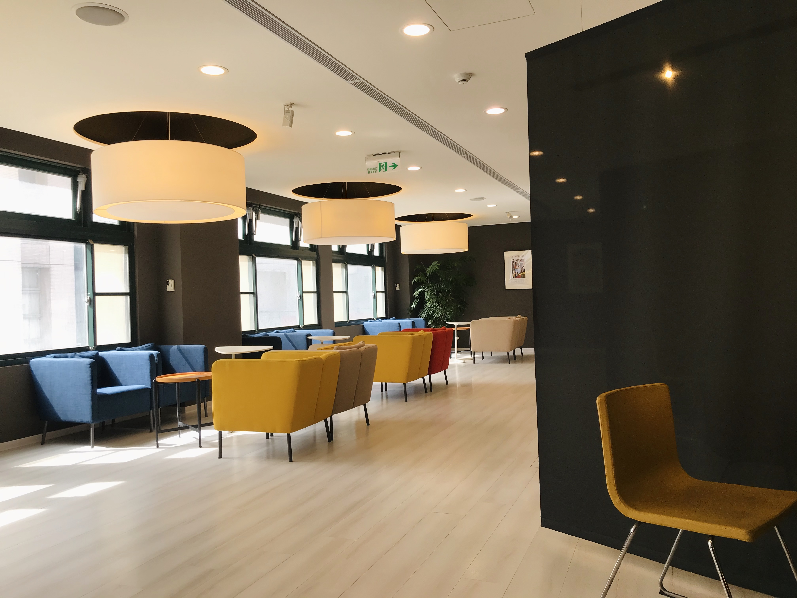
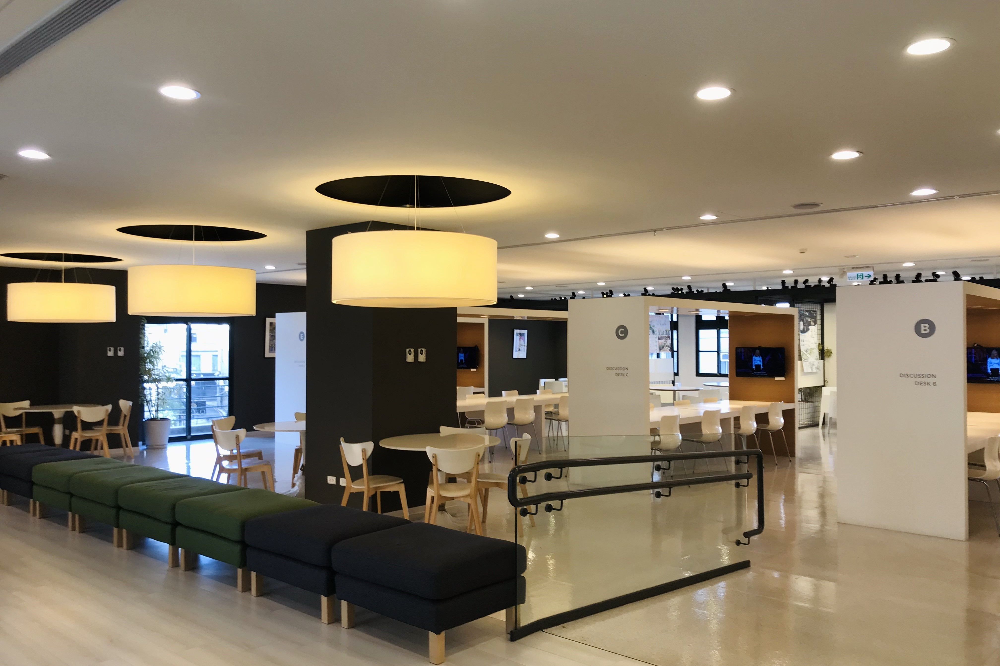
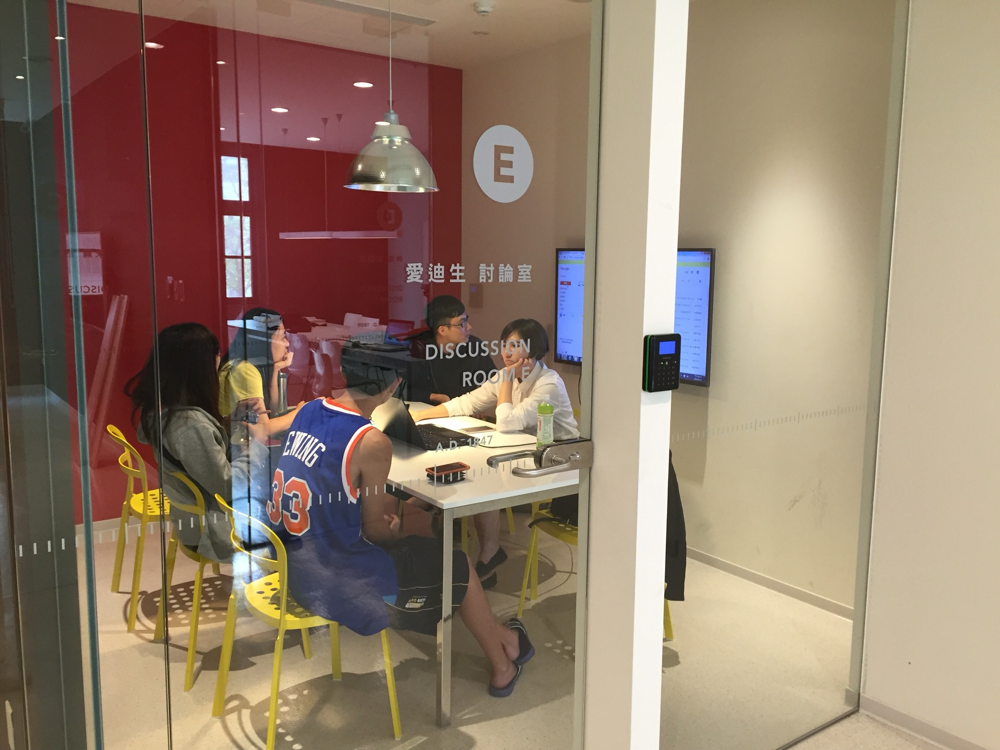
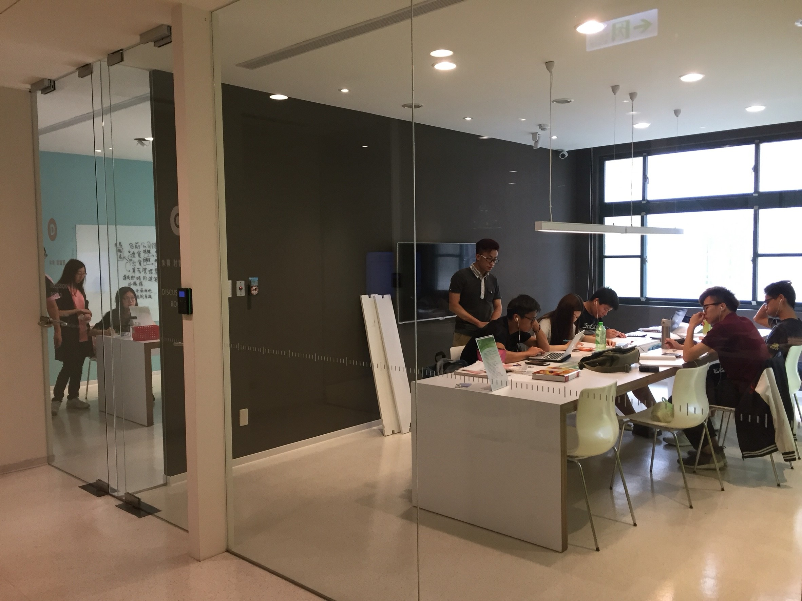

樂學園
自在行-自學村 設有不同形式的學習空間，提供學生個人或團體自主學習，亦可因應需求改成學生展演空間，同時本館撥放輕音樂讓同學能輕鬆自習，亦可讓同學在這邊輕聲的討論課業 星期一至星期五：09：00-20：00 星期六：09：00-17：00
 
活水來-討論坊 提供6間獨立的預約討論空間，學生可進行小組討論或實作。各討論室配備液晶螢幕、白板，另有筆記型電腦可借用。 星期一至星期五：09：00-20：00 星期六：09：00-17：00
 